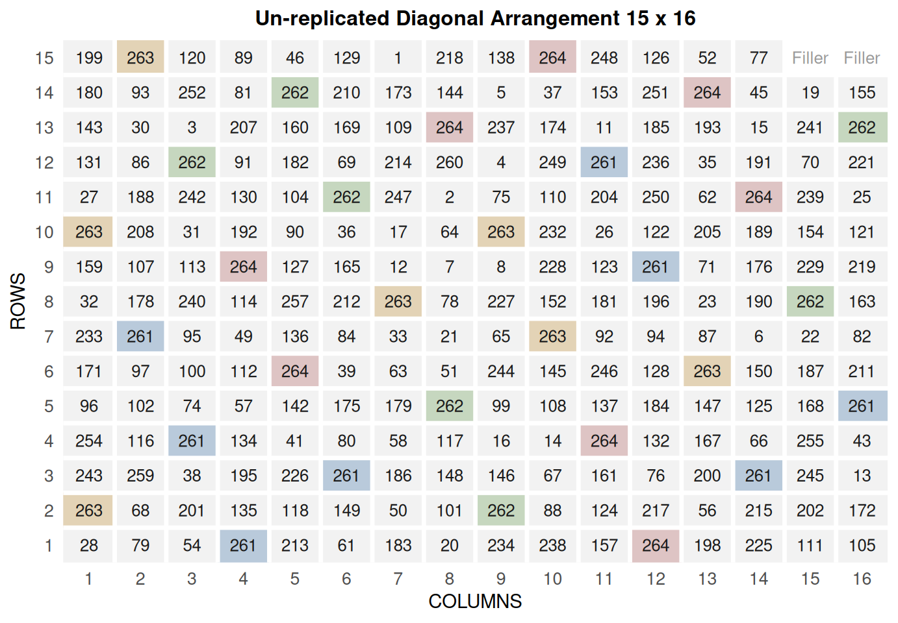
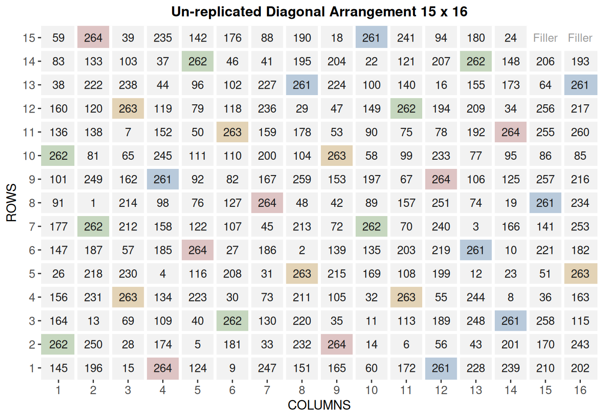

Sparse Allocation¶
Sparse Allocation/Testing¶
This vignette shows how to generate un-replicated designs leveraging the sparse allocation method by using the FielDHub Shiny App and the scripting function sparse_allocation() from the FielDHub R package.
Overview¶
Sparse allocation is a valuable strategy in plant breeding experiments, as it allows researchers to evaluate a large number of treatments over multiple locations in a single experiment. Sparse allocation can increase efficiency and reduce the number of experimental units required, making it a cost-effective option. One standard method for implementing sparse allocation in plant breeding experiments is incomplete block designs (IBD) (Edmondson 2020). FielDHub allocates the entries to the locations with its own compiled block-design search, which keeps each entry’s copies spread as evenly as possible over the locations (see ?do_optim).
The following key points summarize the advantages and disadvantages of sparse allocation (Montesinos-Lopez et al. 2022):
Increased efficiency: By using sparse allocation, breeders can evaluate a large number of genotypes or treatments in a single experiment across multiple environments, which can accelerate the breeding program and reduce the time and resources needed for evaluation.
Selection intensity: The large number of genotypes or treatments evaluated in sparse allocation experiments can increase the genetic diversity in the breeding program and increase the chances of identifying superior genotypes or treatments.
Cost-effective: Sparse allocation experiments are generally less expensive compared to fully replicated experiments since fewer experimental units are needed.
Less accurate predictions: The limited number of experimental units means that the estimates of treatment effects are less precise compared to fully replicated designs. However, an increase in selection intensity may compensate for the loss of accuracy (Trade off problem).
FielDHub includes a function to run the sparse allocation strategy and the multi-location randomization, as well as an interface for creating a sparse allocation design on the FielDHub app.
Use Case¶
The plant breeding project aims to test 260 entries across five environments, but due to limited seed availability, only four replications for each genotype can be created across all five locations. As a result, not all genotypes will be present in all environments. Additionally, the project includes four checks that will be replicated in all environments. To address the seed shortage, the sparse allocation strategy will be used.
The table below illustrates the allocation of the first ten genotypes across the five environments.
| ENV1 | ENV2 | ENV3 | ENV4 | ENV5 | |
|---|---|---|---|---|---|
| Gen-1 | 1 | 1 | 1 | 1 | 0 |
| Gen-2 | 0 | 1 | 1 | 1 | 1 |
| Gen-3 | 1 | 1 | 0 | 1 | 1 |
| Gen-4 | 1 | 1 | 1 | 1 | 0 |
| Gen-5 | 1 | 1 | 1 | 1 | 0 |
| Gen-6 | 1 | 1 | 0 | 1 | 1 |
| Gen-7 | 1 | 0 | 1 | 1 | 1 |
| Gen-8 | 0 | 1 | 1 | 1 | 1 |
| Gen-9 | 1 | 1 | 1 | 0 | 1 |
| Gen-10 | 1 | 1 | 1 | 0 | 1 |
The table illustrates the allocation of genotypes across different environments, with genotypes listed in rows and environments in columns. Specifically, it indicates that Genotype 1 (Gen-1) has been assigned to locations 1, 2, 3, and 4, but not to environment 5. The process of allocating genotypes to locations is achieved through an optimization process that employs IBD principles.
Running the Shiny App¶
To launch the app you need to run either
FielDHub::run_app()
or
library(FielDHub)
run_app()
1. Using the FielDHub Shiny App¶
Once the app is running, go to Unreplicated Designs > Sparse Allocation
Then, follow the following steps where we will show how to generate a sparse allocation experiment.
Inputs¶
-
Import entries’ list? Choose whether to import a list with entry numbers and names for genotypes
or treatments.-
If the selection is
No, the app will generate synthetic data for entries and names of the treatment/genotypes based on the user inputs. -
If the selection is
Yes, the entries list must fulfill a specific format and must be a.csvfile. The file must have the columnsENTRYandNAME. TheENTRYcolumn must have a unique integer number entry for each treatment/genotype. The columnNAMEmust have a unique name that identifies each treatment/genotype. BothENTRYandNAMEmust be unique, duplicates are not allowed. The following table shows an example of the entries list format. Any checks must appear in the first rows of the.csvfile.
-
| ENTRY | NAME |
|---|---|
| 1 | CHECK1 |
| 2 | CHECK2 |
| 3 | CHECK3 |
| 4 | GenotypeA |
| 5 | GenotypeB |
| 6 | GenotypeC |
| 7 | GenotypeD |
| 8 | GenotypeE |
| 9 | GenotypeF |
-
Enter the number of entries/treatments in the Input # of Entries box, which is 260 in our case.
-
Select 4 from the drop-down on the Input # of Checks box.
-
Since we want to run this experiment over 5 locations, set Input # of Locations to 5.
-
Set the number of copies of each treatment in the # of Copies Per Entry dropdown box to 4.
-
Select
serpentineorcartesianin the Plot Order Layout. For this example we will use theserpentinelayout. -
To ensure that randomizations are consistent across sessions, we can set a seed number in the box labeled Random Seed. For instance, we will set it to
16. -
Enter the name for the experiment in the Input Experiment Name box. For example,
SparseTest2023. -
Enter the starting plot number in the Starting Plot Number box. In this experiment we want the plot start at
1, 1001, 2001, 3001, 4001for each location. -
Enter the name of the site/location in the Input the Location box. For this experiment we will set the sites as
FARGO, CASSELTON, MINOT, PROSPER, WILLISTON. -
Once we have entered all the information for our experiment on the left side panel, click the Run! button to run the design.
-
You will then be prompted to select the dimensions of the field from the list of options in the drop-down in the middle of the screen with the box labeled Select dimensions of field. In our case, we will select
16 x 15. We also can see the table with the sparse allocation. -
Click the Randomize! button to randomize the experiment with the set field dimensions and to see the output plots.
If you change any of the inputs on the left side panel after running an experiment initially, you have to click the Run and Randomize buttons again, to re-run with the new inputs.
Outputs¶
After you run a sparse allocation design in FielDHub and set the dimensions of the field, there are several ways to display the information about the sparse process and the randomization.
Expt Design Info¶
On the first tab, Expt Design Info, you can see all the entries in the randomization displayed in a binary matrix with a column for each location, with a 1 indicating that the respective genotype is in the respective location, and a 0 indicating that it is not. This is the sparse genotype allocation characteristic of this method. There are buttons to copy, print, and save the table to an Excel file.
Randomized Field¶
The Randomized Field tab displays a graphical representation of the randomization of the entries in a field of the specified dimensions. The checks are each colored uniquely, showing the number of times they are distributed throughout the field. The display includes numbered labels for the rows and columns. You can copy the field as a table or save it directly as an Excel file with the Copy and Excel buttons at the top.
In the Choose % of Checks: drop-down box, users can play with different options for the total amount of checks in the field.
Plot Number Field¶
On the Plot Number Field tab, there is a table display of the field with the plots numbered according to the Plot Order Layout specified, either serpentine or cartesian. You can see the corresponding entries for each plot number in the field book. Like the Randomized Field tab, you can copy the table or save it as an Excel file with the Copy and Excel buttons.
Field Book¶
The Field Book displays all the information on the experimental design in a table format. It contains the specific plot number and the row and column address of each entry, as well as the corresponding treatment on that plot. This table is searchable, and we can filter the data in relevant columns.
2. Using the FielDHub function: sparse_allocation()¶
You can run the same design with a function in the FielDHub package, sparse_allocation().
First, you need to load the FielDHub package typing,
library(FielDHub)
Then, you can enter the information describing the above design like this:
sparse_example <- sparse_allocation(
lines = 260,
l = 5,
copies_per_entry = 4,
checks = 4,
plotNumber = c(1, 1001, 2001, 3001, 4001),
locationNames = c("FARGO", "CASSELTON", "MINOT", "PROSPER", "WILLISTON"),
exptName = "SparseTest2023",
seed = 16
)
Details on the inputs entered in sparse_allocation() above:¶
lines = 260is the number of genotypes.l = 5is the number of locations.copies_per_entry = 4is the number of copies of each entry.checks = 4is the number of checks.plotNumber = c(1, 1001, 2001, 3001, 4001)are optional starting plot numberslocationNames = c("FARGO", "CASSELTON", "MINOT", "PROSPER", "WILLISTON")are optional names for each location.exptName = "SparseTest2023"is an optional name of the experimentseed = 16is the random seed number to replicate identical randomizations.
Print sparse_example object¶
To print a summary of the information that is in the object sparse_example, we can use the generic function print().
The sparse_allocation() function returns a list of objects, includes all the outputs from the function diagonal_arrangement() and in addition list_locs, allocation, and size_locations. The list_locs object is a list of data frames. Each data frame has two columns; ENTRY and NAME with the information to randomize to each environment. The object allocation is the binary allocation matrix of genotypes to locations, and size_locations is a data frame with a column for each location and a row indicating the size of the location (number of field plots).
For example, we can display the allocation object. Let us print the first ten genotypes allocation.
print(head(sparse_example$allocation, 10))
LOC1 LOC2 LOC3 LOC4 LOC5
1 1 1 0 1 1
2 1 1 1 0 1
3 1 1 1 1 0
4 1 1 0 1 1
5 1 1 1 1 0
6 1 1 1 1 0
7 1 1 1 0 1
8 1 1 0 1 1
9 0 1 1 1 1
10 0 1 1 1 1
We can manipulate the sparse_allocation object as any other list in R. For example, we can print the design information as following:
print(sparse_example)
which outputs:
Sparse Allocation: Un-replicated Diagonal Arrangement Design
Information on the design parameters:
List of 11
$ rows : num 15
$ columns : num 16
$ treatments : int 208
$ checks : int 4
$ entry_checks :List of 5
..$ : num [1:4] 261 262 263 264
..$ : num [1:4] 261 262 263 264
..$ : num [1:4] 261 262 263 264
..$ : num [1:4] 261 262 263 264
..$ : num [1:4] 261 262 263 264
$ rep_checks :List of 5
..$ : num [1:4] 8 7 7 8
..$ : num [1:4] 8 8 7 7
..$ : num [1:4] 7 7 8 8
..$ : num [1:4] 7 8 7 8
..$ : num [1:4] 8 7 7 8
$ locations : num 5
$ planter : chr "serpentine"
$ percent_checks: chr [1:5] "12.5%" "12.5%" "12.5%" "12.5%" ...
$ fillers : int 2
$ seed : num 16
Check spacing — Location 1
Optimization: OFF
Distance: Euclidean, in grid steps
Same-check neighbor radius: 5 grid steps
Metric Value
Minimum same-check distance 2.828
Mean nearest same-check distance 3.501
Mean pairwise same-check distance 8.418
Occurrences with a same-check neighbor 83.3%
Check spacing — Location 2
Optimization: OFF
Distance: Euclidean, in grid steps
Same-check neighbor radius: 5 grid steps
Metric Value
Minimum same-check distance 2.828
Mean nearest same-check distance 3.900
Mean pairwise same-check distance 8.358
Occurrences with a same-check neighbor 63.3%
Check spacing — Location 3
Optimization: OFF
Distance: Euclidean, in grid steps
Same-check neighbor radius: 5 grid steps
Metric Value
Minimum same-check distance 2.828
Mean nearest same-check distance 3.793
Mean pairwise same-check distance 8.411
Occurrences with a same-check neighbor 73.3%
Check spacing — Location 4
Optimization: OFF
Distance: Euclidean, in grid steps
Same-check neighbor radius: 5 grid steps
Metric Value
Minimum same-check distance 2.828
Mean nearest same-check distance 3.908
Mean pairwise same-check distance 7.861
Occurrences with a same-check neighbor 70.0%
Check spacing — Location 5
Optimization: OFF
Distance: Euclidean, in grid steps
Same-check neighbor radius: 5 grid steps
Metric Value
Minimum same-check distance 2.828
Mean nearest same-check distance 3.687
Mean pairwise same-check distance 8.556
Occurrences with a same-check neighbor 73.3%
Distance averages give equal weight to checks with repeated occurrences.
Minimum distance is the smallest across checks.
Neighbor percentage includes all check occurrences.
NA means that a same-check distance cannot be calculated.
Spacing metrics do not measure statistical precision.
10 First observations of the data frame with the diagonal_arrangement field book:
ID EXPT LOCATION YEAR PLOT ROW COLUMN CHECKS ENTRY TREATMENT
1 1 SparseTest2023 FARGO 2026 1 1 1 0 28 G-28
2 2 SparseTest2023 FARGO 2026 2 1 2 0 79 G-79
3 3 SparseTest2023 FARGO 2026 3 1 3 0 54 G-54
4 4 SparseTest2023 FARGO 2026 4 1 4 261 261 CH-261
5 5 SparseTest2023 FARGO 2026 5 1 5 0 213 G-213
6 6 SparseTest2023 FARGO 2026 6 1 6 0 61 G-61
7 7 SparseTest2023 FARGO 2026 7 1 7 0 183 G-183
8 8 SparseTest2023 FARGO 2026 8 1 8 0 20 G-20
9 9 SparseTest2023 FARGO 2026 9 1 9 0 234 G-234
10 10 SparseTest2023 FARGO 2026 10 1 10 0 238 G-238
Access to sparse_example object¶
The object sparse_example is a list consisting of all the information displayed in the output tabs in the FielDHub app: design information, plot layout, plot numbering, entries list, and field book, indexed by each location in the experiment. These are accessible by the $ operator, i.e. designs$layoutRandom[[1]] for LOC1 or designs$fieldBook for the whole field book.
designs$fieldBook is a data frame containing information about every plot in the field, with information about the location of the plot and the treatment in each plot. As seen in the output below, the field book has columns for ID, EXPT, LOCATION, YEAR, PLOT, ROW, COLUMN, CHECKS, ENTRY, and TREATMENT.
Let us see the first 10 rows of the field book for the first location in this experiment.
field_book <- sparse_example$fieldBook
head(field_book, 10)
ID EXPT LOCATION YEAR PLOT ROW COLUMN CHECKS ENTRY TREATMENT
1 1 SparseTest2023 FARGO 2026 1 1 1 0 28 G-28
2 2 SparseTest2023 FARGO 2026 2 1 2 0 79 G-79
3 3 SparseTest2023 FARGO 2026 3 1 3 0 54 G-54
4 4 SparseTest2023 FARGO 2026 4 1 4 261 261 CH-261
5 5 SparseTest2023 FARGO 2026 5 1 5 0 213 G-213
6 6 SparseTest2023 FARGO 2026 6 1 6 0 61 G-61
7 7 SparseTest2023 FARGO 2026 7 1 7 0 183 G-183
8 8 SparseTest2023 FARGO 2026 8 1 8 0 20 G-20
9 9 SparseTest2023 FARGO 2026 9 1 9 0 234 G-234
10 10 SparseTest2023 FARGO 2026 10 1 10 0 238 G-238
Plot field layout¶
Plot field layout Location 1¶
For plotting the layout in function of the coordinates ROW and COLUMN in the field book object we can use the generic function plot() as follows,
plot(sparse_example, l = 1)

The above plot is for LOC1. We can plot any location in the experiment, like location 2 in this example:
Plot field layout Location 2¶
plot(sparse_example, l = 2)

The figure above shows a map of an experiment randomized as an unreplicated arrangement design. The light plots represent the unreplicated treatments, while the muted coloured check plots are replicated throughout the field in a systematic diagonal arrangement. Filler plots are white with grey labels.